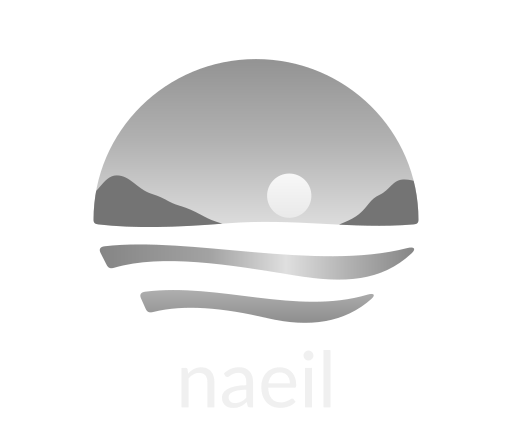

컬러 · 밝은 배경

컬러 · 어두운 배경

회색 A · 밝은 배경

회색 A · 어두운 배경
브랜드 에셋 1.0.0 · 2026-10-11 · Lato Regular 400 / 기본 글자 간격
노을의 따뜻함, 자연에 대한 경외, 하루를 잘 마쳤다는 안도감을 담은 해·섬·물결 심볼입니다. 다른 프로젝트에서는 이 패키지의 파일을 그대로 복사해 사용할 수 있습니다.
컬러 · 밝은 배경
컬러 · 어두운 배경
회색 A · 밝은 배경

회색 A · 어두운 배경
| 사용처 | 밝은 배경용 파일 | 권장 크기 |
|---|---|---|
| 웹 헤더 | naeil-horizontal-color.svg | 높이 28px / 최소 24px |
| 푸터 | naeil-footer-color.svg | 높이 20px |
| 로그인 / 작은 아이콘 | naeil-symbol-color-small.svg | 16–48px / 로그인 40px |
| 큰 심볼 | naeil-symbol-color.svg | 48px 이상 |
| 대표 로고 | naeil-stacked-color.svg | 가로 160px 이상 |
| 글자만 | naeil-wordmark-color.svg | 글자 몸통 10px 이상 |
| 브라우저 탭 | favicon.svg + favicon.ico | 16 / 32 / 48px |
회색은 color → gray, 어두운 배경은 color-dark / gray-dark를 선택합니다. 컬러와 회색 각각 밝고 어두운 배경용 파일이 있습니다. PNG 폴더에는 투명 배경 고해상도 이미지와 실제 크기 1×/2×/4× 이미지가 있습니다. 큰 심볼과 세로 로고는 최대 4096px입니다.
이 폴더의 svg, icons를 프로젝트의 public/brand/에 복사하고 다음과 같이 사용합니다. Next.js에서도 일반 img를 사용할 수 있습니다. 로고 글자는 벡터 경로여서 폰트 설치, 웹폰트 로딩, React 패키지가 필요하지 않습니다.
<img src="/brand/svg/naeil-horizontal-color.svg"
alt="naeil" height="28" style="width:auto;display:block">
<link rel="icon" href="/brand/icons/favicon.ico" sizes="16x16 32x32 48x48">
<link rel="icon" href="/brand/icons/favicon.svg" type="image/svg+xml" sizes="any">
<link rel="apple-touch-icon" href="/brand/icons/apple-touch-icon.png">
밝음·어두움 전환이 있는 실행 예제와 로고 전용 CSS를 제공합니다. 예제는 앱의 .dark 또는 data-theme="dark"를 따릅니다. data-theme="auto"를 명시할 때만 OS 설정을 따릅니다. 프로젝트 본문 글꼴은 기존 설정을 유지합니다.
Next.js의 기존 app/favicon.ico, app/icon.*, metadata.icons가 있으면 옛 로고와 중복되지 않게 교체합니다. 경로는 앱의 basePath에 맞춥니다. icons/site.webmanifest는 앱 이름·색·아이콘 목록의 예제입니다. 기존 manifest의 scope, start_url 등은 보존하고 아이콘 목록을 병합하세요. 재사용 프로젝트 이름은 해당 서비스 이름으로 바꿉니다.
최종 검수 보고서 · 크기·배경별 원본 증거판 · 파일·치수 명세 · SHA-256 목록
SVG는 편집 가능한 경로와 그라데이션입니다. 원본 심볼·Lato 폰트·재생성 스크립트는 source 폴더에 있습니다. Lato의 SIL OFL 1.1과 고정된 출처·해시를 보존했습니다. 원본 폰트 재배포 시 저작권·라이선스 고지를 유지하세요. 폰트 라이선스는 naeil 상표의 사용 허가를 의미하지 않습니다.
웹·디지털용 배포 파일입니다. 회색 A는 명도 단계가 있는 그라데이션으로, 순수 한 가지 잉크만 사용하는 스탬프 원본은 아닙니다. CMYK 인쇄 교정·상표 유사성 조사는 이번 검수 범위에 포함하지 않습니다. 기존 npm 배포판과 운영 사이트의 자동 교체·배포는 포함하지 않습니다.